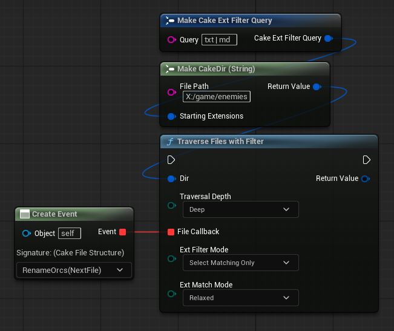

Tour
The goal of CakeFS is to make filesystem operations as ergonomic and expressive as possible. Filesystem operations are an inevitable part of software development, whether we are developing ad-hoc editor tools or custom serialization strategies. Having ergonomic ways to achieve these filesystem operations gives us the agility to stay focused on our higher level goals. Let's take a look at a few ways we can solve common filesystem operations with CakeFS. We're going to start by looking at an advanced operation and slowly break down the fundamental CakeFS components that make this simple and ergonomic.
Note
The following example will exhibit minimal error handling to keep things brief. CakeFS allows for informal error handling, but always supplies the user with enough information to accomodate robust error handling.
Also, all of the following examples can equivalently be expressed in terms of asynchronous functions, but we will not explore those in this tour to keep things simple and concise.
Gathering Files
One of the most common requirements in filesystem operations is to gather files from directories and process them in some particular way. This action of gathering files can easily be expressed using CakeFS's CakeMix Gather utility functions. Let's say we want to gather all files in a source directory; we can easily do this using GatherFiles.

Let's break this down. First we create a CakeDir object that contains the directory we wish to gather files from. We submit the directory object and an OpDepth argument to GatherFiles. The OpDepth argument determines if we should gather files within subdirectories contained by the source directory. Since we chose Deep, we will gather all files contained within the source directory and all of its subdirectories.
For now, we'll just print the amount of files we found by taking the count of the elements in the array of files returned.
Gathering Specific File Types
With our initial gathering example, we gathered all files found in the source directory regardless of their filetype. It's far more common to restrict the kind of files we want to process to a particular set of types. In this example, let's say we only want to gather image files in our source directory. CakeFS makes this kind of operation simple, as we simply need to ensure our directory object has a filter containing the file extensions we want to collect, and then we can use GatherFilesWithFilter:
FCakeDir EnemiesDir{
TEXTVIEW("X:/game/enemies"),
FCakeExtFilterQuery{ "jpg | jpeg | png" }
};
FCakeMixBatchFiles FilesGathered {
CakeMixLibrary::Dir::GatherFilesWithFilter(EnemiesDir, ECakePolicyOpDepth::Deep)
};
if ( FilesGathered.WorkWasCompleted() )
{
UE_LOG(LogTemp, Warning,
TEXT("Gathered [%d] image file(s)."),
FilesGathered.Batch.Num()
);
}
To accomplish this new goal, we only had to make minor modifications. Our CakeDir object was given a file extension filter that contains the extensions jpg, jpeg, and png. Now, when we run GatherFilesWithFilter, we will only get files with one of those extensions in the returned array.
CakeMix library contains useful utility functions like the ones we've seen; they're there to help reduce boilerplate in a variety of common filesystem operations. However, there's no magic behind these functions. In the next example, we'll write our own Gather operation directly using a CakeDir object instead.
Note
If you'd like to see what CakeMix library has to offer, you can visit its documentation here. Just be advised, CakeMix is much easier understood after you have studied the fundamentals of CakeFS first.
Custom Directory Traversal
CakeMix can provide us with some very terse and expressive ways to accomplish common goals, but it is not relying on any lower-level magic. CakeMix simply leverages the API offered by CakeDir objects, and so we can easily write our own Gather function with minimal effort. Let's gather all the image files in our directory object, using its traversal interfaces instead of a CakeMix function.
FCakeDir EnemiesDir{
TEXTVIEW("X:/game/enemies"),
FCakeExtFilterQuery{ "jpg | jpeg | png" }
};
TArray<FCakeFile> ImageFiles{};
auto Traversal = EnemiesDir.TraverseFilesWithFilter(
ECakePolicyOpDepth::Deep,
[&ImageFiles](FCakeFile NextFile)
{
ImageFiles.Emplace(MoveTemp(NextFile));
}
);
if (Traversal.WasCompleted())
{
UE_LOG(LogTemp, Warning,
TEXT("Gathered [%d] image file(s)."),
ImageFiles.Num()
);
}
In addition to all the standard directory operations you might expect (create, delete, copy, &c.), CakeDir objects offer us a powerful set of traversal interfaces. While some of the details differ, all of these traversal functions follow a common core design pattern: we need to specify a depth for the traversal and supply a callback that will be invoked on each item that is visited. In our case, all we need to do is take each file we are passed and add it to our ImageFiles collection. Remember, since we are using the file extension filter in this traversal, it will only be called when it encounters a file whose extension is contained in the filter.
Note
If you want to see what CakeDir offers, check out the CakeDir documentation for more details.
Working With Files
Up until now we haven't done anything useful with the CakeFile objects we have been gathering. Let's change that. Let's imagine that we have text files in our enemies directory that might contain specific enemy names, and we just decided to rename one of our enemies. We can use directory traversal and file operations to easily accomplish a comprehensive renaming process across all relevant files. In our case, we've realized that all orcs in our game are red, and thus the red orcs really are just orcs. Here's one way we could remedy this problem:
FCakeDir EnemiesDir{
TEXTVIEW("X:/game/enemies"),
FCakeExtFilterQuery{ "txt | md" }
};
FString OldName{ TEXT("ID_RED_ORC") };
FString NewName{ TEXT("ID_ORC") };
auto Traversal = EnemiesDir.TraverseFilesWithFilter(
ECakePolicyOpDepth::Deep,
[&OldName, &NewName](FCakeFile NextFile)
{
TCakeOrderFileText ReadText{
NextFile.ReadTextFile()
};
const int32 NumReplacements{
ReadText.Order.ReplaceInline(
*OldName, *NewName, ESearchCase::CaseSensitive)
};
if (NumReplacements > 0)
{
if (!NextFile.WriteTextFile(*ReadText))
{
UE_LOG(LogTemp, Error,
TEXT("Failed updating file: [%s]"),
*NextFile.CloneFileName()
);
}
}
}
);

In this example, we have modified our CakeDir object's extension filter to only target .txt and .md files. Using the filter, we can be sure that each file passed to our callback is one we'd like to try to process. Within our callback function, we use the CakeFile interfaces to easily read and write the file's contents as text. CakeFiles also let us easily query information about the file, like getting the file name, which we use in the error message if a write operation fails.
Note
For more details on CakeFile objects, see the CakeFile documentation.
...and more!
These examples are just a quick taste of the power that CakeFS can offer you. CakeFS has dedicated types for paths, file extensions, files, and directories. It offers flexible yet robust error handling that can accomodate both informal and error handling styles. Finally, built on top of this core is an advanced set of utility libraries that help you in common operations as well as running CakeFS operations in an asynchronous context. Thank you for taking the time to join us on this tour, and best of luck on your endeavours!